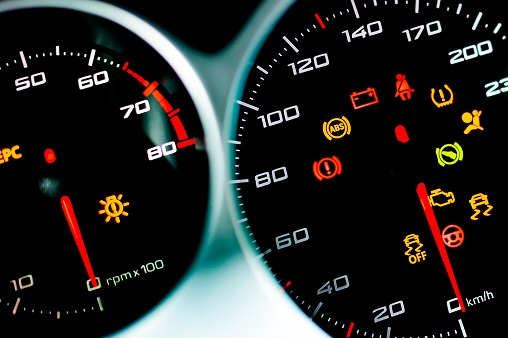

Como verificar o nivel do liquido de arrefecimento.
Primeiro Passo: Segurança em Primeiro Lugar
Antes de começar, certifique-se de que o motor esteja frio. Verificar o nível do líquido de arrefecimento em um motor quente pode resultar em queimaduras graves. Abra o capô do carro e localize o reservatório de expansão do líquido de arrefecimento.
Passo 2: Identificação do Reservatório O reservatório de expansão do líquido de arrefecimento geralmente é um tanque plástico transparente ou semitransparente, muitas vezes localizado próximo à parte superior do compartimento do motor. Ele deve ter marcações indicando o nível mínimo e máximo do líquido. Passo 3: Verificação do Nível Com o motor frio, olhe para o reservatório de expansão e verifique o nível do líquido de arrefecimento. O líquido deve estar entre as marcações de mínimo e máximo. Se estiver abaixo do nível mínimo, será necessário adicionar mais líquido. Passo 4: Adição de Líquido de Arrefecimento Se o nível estiver baixo, abra cuidadosamente a tampa do reservatório de expansão. Se o motor estiver quente, aguarde alguns minutos para que esfrie antes de abrir a tampa. Adicione líquido de arrefecimento lentamente até que o nível atinja a marcação de máximo. Use um funil para evitar derramamentos. Passo 5: Fechamento do Reservatório Após adicionar líquido suficiente, recoloque com firmeza a tampa do reservatório de expansão. Passo 6: Verificação Visual Além de verificar o nível do líquido, também é importante inspecionar visualmente o líquido de arrefecimento. Deve ter uma cor geralmente verde, vermelha ou amarela, dependendo do tipo de líquido utilizado. O líquido deve estar limpo, sem sinais de sujeira, detritos ou descoloração. Continuar Lendo
Entendendo o funcionamento do carro.
Motor:
O motor é o coração do carro, responsável por transformar a energia do combustível em movimento. Ele tem várias partes, como pistões, bielas e válvulas, que trabalham juntas para gerar energia e impulsionar o carro para frente.
Transmissão: A transmissão é como a "caixa de velocidades" do carro. Ela controla a distribuição de energia do motor para as rodas, permitindo que o carro mude de marcha e alcance diferentes velocidades. Sistema de Freios: Os freios são essenciais para parar o carro de forma segura. Eles usam pressão hidráulica para apertar as pastilhas de freio contra os discos ou tambores, criando atrito e diminuindo a velocidade do veículo. Direção: O sistema de direção permite que o motorista controle a direção do carro. Ele inclui componentes como a coluna de direção, caixa de direção e sistema de direção assistida, que tornam mais fácil girar o volante. Suspensão: A suspensão ajuda a manter o carro estável e confortável ao dirigir. Ela absorve os impactos das irregularidades da estrada, como buracos e lombadas, garantindo uma condução suave e estável. Sistema Elétrico:O sistema elétrico fornece energia para os componentes elétricos do carro, como luzes, rádio e sistema de ignição. Ele inclui a bateria, alternador e fusíveis, que garantem o funcionamento adequado desses dispositivos. Carroceria: A carroceria é a estrutura externa do veículo, que protege os ocupantes e os componentes internos do carro. Ela é feita de materiais resistentes, como aço e alumínio, e inclui portas, capô, para-lamas e teto. Rodas e Pneus: As rodas e pneus são essenciais para a locomoção do veículo. As rodas fornecem o suporte necessário para o carro, enquanto os pneus proporcionam aderência à estrada, permitindo que o veículo se mova de forma eficiente e segura. Continuar Lendo

Identificando as luzes no Painel
As luzes no painel do carro são como o idioma do seu veículo, elas têm uma maneira de se comunicar conosco sobre o que está acontecendo debaixo do capô. Aqui está um guia rápido sobre como identificar essas luzes: Localize o painel de instrumentos: Isso é onde todas as luzes de aviso estão localizadas. Normalmente, fica atrás do volante, na frente do motorista.
Entenda os símbolos: Cada luz no painel tem um símbolo ou ícone específico que indica o problema ou a função que está sendo ativada. É importante familiarizar-se com os símbolos mais comuns para entender o que seu carro está tentando lhe dizer. Algumas luzes comuns incluem: Luz de óleo: Geralmente parece uma lata de óleo ou uma gota de óleo. Indica problemas relacionados ao óleo do motor, como baixo nível de óleo ou pressão de óleo baixa. Luz de bateria: Pode parecer uma bateria ou uma luz de advertência com o símbolo "+/-". Indica problemas com o sistema de carga da bateria ou alternador. Luz de freio: Geralmente parece um ponto de exclamação entre parênteses. Indica problemas com o sistema de freios, como baixo fluido de freio ou problemas no sistema ABS. Luz do motor: Pode parecer um motor, às vezes com a palavra "Check" ou "Service". Indica problemas com o motor ou o sistema de controle de emissões. Luz de temperatura do líquido de arrefecimento: Geralmente parece um termômetro ou uma forma de gota de líquido. Indica problemas relacionados à temperatura do motor, como superaquecimento. Luz de alerta de pressão dos pneus: Pode parecer um pneu inflado ou uma luz de aviso com a palavra "TPMS". Indica problemas com a pressão dos pneus, como pneus murchos ou sistema de monitoramento de pressão dos pneus com falha. Luz de airbag: Geralmente parece um assento com um ponto de exclamação ou a palavra "SRS". Indica problemas com o sistema de airbag, como um airbag desativado ou falha no sistema. Luz de aviso de combustível baixo: Pode parecer uma bomba de gasolina ou uma luz de aviso com o símbolo de um tanque de combustível vazio. Indica que o nível de combustível está baixo e é hora de reabastecer. Luz de combustivel da partida fria / Nível do reservatório: O nível de combustível no reservatório de partida a frio pode ser verificado de maneira semelhante ao tanque principal de combustível. Em alguns veículos, pode haver um medidor específico no painel de instrumentos que indica o nível de combustível no reservatório de partida a frio. É importante manter o reservatório de partida a frio abastecido, especialmente em climas frios, para garantir que o sistema funcione corretamente quando necessário. obs. Lembre-se de que nem todos os veículos possuem esse recurso, e sua disponibilidade pode variar dependendo do modelo e fabricante do carro. Se você estiver em dúvida sobre se o seu veículo possui um reservatório de partida a frio e como verificar seu nível, consulte o manual do proprietário . Luz de aviso de ABS: Pode haver um problema com um dos sensores de velocidade das rodas, a unidade de controle do ABS ou outros componentes do sistema ABS.O sistema ABS ajuda a evitar que as rodas travem durante uma frenagem de emergência, o que pode ajudar a manter o controle do veículo em situações de frenagem intensa. Se a luz do ABS acender no painel do seu veículo, isso indica um problema com o sistema ABS. Luz de aviso de porta aberta: Geralmente parece uma porta aberta ou uma luz de aviso com a palavra "Door". Indica que uma das portas do veículo está aberta enquanto o carro está em movimento. Luz de aviso de cinto de segurança: Pode parecer um cinto de segurança ou uma luz de aviso com a palavra "Seatbelt". Indica que um ocupante do veículo não está usando o cinto de segurança. Luz de aviso de falha do sistema de freio: Pode parecer um "BRAKE" ou um ponto de exclamação entre parênteses. Indica problemas graves com o sistema de freio que requerem atenção imediata. Luz de aviso de assistência ao estacionamento: Indica problemas ou ativação dos sensores de estacionamento, que ajudam a detectar obstáculos ao estacionar. Preste atenção à cor e ao comportamento da luz: Além do símbolo, a cor da luz e se ela está piscando ou permanece estática também fornecem informações importantes. Uma luz vermelha piscando geralmente indica um problema sério que requer atenção imediata, enquanto uma luz amarela pode indicar um problema menos crítico, mas que ainda precisa ser verificado. Ao identificar e entender as luzes no painel do seu carro, você pode responder rapidamente a problemas potenciais e manter seu veículo funcionando suavemente. Se você vir uma luz que não conhece ou está preocupado com o que ela pode significar, é sempre melhor buscar aconselhamento de uma autorizada ou oficina de sua confiança. obs.Consulte o manual do proprietário: Se você não tiver certeza do significado de uma luz específica. Ele deve fornecer informações detalhadas sobre cada luz de aviso e o que fazer quando elas se acendem. Continuar Lendo
Como verificar o nivel de oleo de motor.
Verificar o nível de óleo do seu carro é super importante para garantir que o motor funcione bem. Aqui está um guia simples para você: Estacione em uma superfície plana: Certifique-se de que o carro esteja em uma superfície nivelada para obter uma leitura precisa do óleo. Desligue o motor e espere esfriar: Deixe o carro desligado por alguns minutos para que o óleo se assente no cárter e a temperatura do motor abaixe.
Localize a vareta de óleo: Abra o capô do seu carro e procure a vareta de óleo, que geralmente tem uma alça colorida ou em forma de argola, com uma tampa escrita "Oil" ou "Engine Oil". Retire a vareta de óleo: Puxe a vareta de óleo para fora do tubo onde ela está inserida. Limpe-a com um pano limpo para remover qualquer óleo antigo e sujeira. Reinsira a vareta de óleo: Após limpar a vareta, insira-a de volta ao tubo até o fundo. Retire a vareta novamente e verifique o nível: Retire a vareta novamente e observe o nível de óleo. Geralmente, há duas marcas na vareta: uma marca baixa e uma marca alta. O nível de óleo deve estar entre essas duas marcas. Se estiver abaixo da marca baixa, você precisa adicionar mais óleo. Adicione óleo, se necessário: Se o nível estiver baixo, adicione óleo lentamente através do bocal de enchimento de óleo. Verifique o nível novamente com a vareta para garantir que esteja dentro da faixa correta. Feche tudo e pronto!: Após verificar e, se necessário, adicionar óleo, coloque a vareta de óleo de volta no lugar e feche o capô do carro. É isso! Verificar o nível de óleo é uma maneira simples de garantir que seu carro funcione suavemente e evite danos ao motor. Continuar Lendo
Economia de Combustivel.
A manutenção adequada do veículo desempenha um papel fundamental na economia de combustível. Aqui estão algumas maneiras pelas quais a manutenção pode ajudar a melhorar a eficiência do combustível:
Troca regular de óleo: O óleo do motor sujo pode aumentar o atrito e diminuir a eficiência do motor. Uma troca regular de óleo, conforme recomendado pelo fabricante do veículo, ajuda a manter o motor funcionando de forma eficiente. Filtros limpos: Filtros de ar e combustível sujos podem restringir o fluxo de ar e combustível para o motor, o que pode afetar negativamente o consumo de combustível. Substitua esses filtros conforme necessário para garantir um bom desempenho. Velas de ignição em boas condições: Velas de ignição desgastadas ou sujas podem levar a uma queima de combustível incompleta, resultando em consumo excessivo de combustível. Verifique e substitua as velas de ignição de acordo com o intervalo recomendado. Alinhamento e balanceamento das rodas: Rodas desalinhadas ou desbalanceadas podem criar atrito extra, aumentando assim o consumo de combustível. Mantenha as rodas alinhadas e balanceadas para garantir uma condução suave e eficiente. Verificação do sistema de ignição: Um sistema de ignição mal ajustado pode causar problemas de combustão e diminuir a eficiência do motor. Certifique-se de que o sistema de ignição esteja funcionando corretamente e faça os ajustes necessários, se necessário. Pressão correta dos pneus: Pneus mal calibrados podem aumentar a resistência ao rolamento, o que significa que o motor precisa trabalhar mais para manter o carro em movimento. Mantenha os pneus calibrados de acordo com as especificações do fabricante para garantir uma condução eficiente. Portanto, uma manutenção regular e adequada do veículo não apenas prolonga a vida útil do carro, mas também ajuda a garantir um consumo de combustível mais eficiente. Continuar Lendo